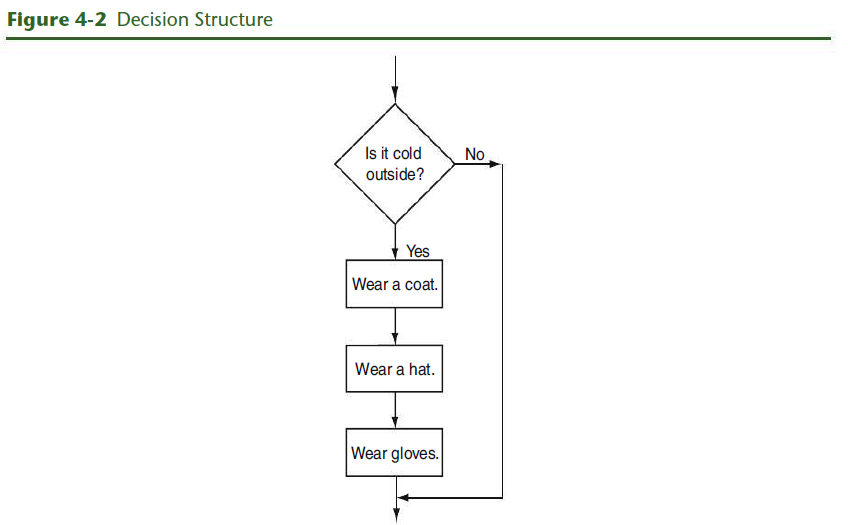
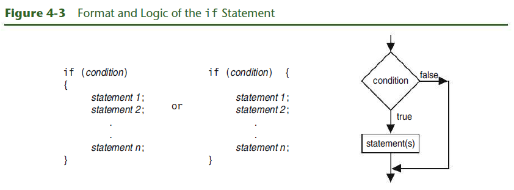

Chapter 4: Making Decision
Textbook
4.1 Relational Operators
CONCEPT: Relational operators allow you to compare numeric and char values to determine whether one is greater than, less than, equal to, or not equal to another.
Program 4-1
// This program displays the values C++ uses to represent true and false.
#include <iostream>
using namespace std;
int main()
{
bool trueValue, falseValue;
int x = 5, y = 10;
trueValue = (x < y);
falseValue = (y == x);
cout << "True is " << trueValue << endl;
cout << "False is " << falseValue << endl;
return 0;
}Program 4-1 Output
True is 1
False is 0Let’s examine the statements containing the relational expressions a little closer:
trueValue = (x < y);
falseValue = (y == x);These statements may seem odd because they are assigning the value of a comparison to a variable. In the first statement, the variable trueValue is being assigned the result of x < y. Because x is less than y, the expression is true, and the variable trueValue is assigned a nonzero value. In the second statement, the expression y == x is false, so the variable falseValue is set to 0.
When writing statements such as these, most programmers enclose the relational expression in parentheses, as shown above, to make it clearer.
Parentheses are not actually required, however, because even without them the relational operation is carried out before the assignment operation is performed. This occurs because relational operators have a higher precedence than the assignment operator. Likewise, arithmetic operators have a higher precedence than relational operators.
The statement
is equivalent to the statement
In both cases, y - 8 is evaluated first.
Table 4-3: Statements that incude Relational Expressions (Assume x is 10, y is 7, and z is an int or bool.)
| Stat | |
|---|---|
| Statement | Outcome |
|---|---|
z = x < y |
z is assigned 0 because x is not less than y. |
cout << (x > y); |
Displays 1 because x is greater than y. |
z = (x >= y); |
z is assigned 1 because x is greater than or equal to y. |
cout << (x <= y); |
Displays 0 because x is not less than or equal to y. |
z = (y != x); |
z is assigned 1 because y is not equal to x. |
cout << (x == (y + 3)); |
Displays 1 because x is equal to y + 3. |
Relational operators also have a precedence order among themselves. The two operators that test for equality or lack of equality (== and !=) have the same precedence as each other.
Table 4-4: Precedence of Relational Operators (Highest to Lowest)
> >= < <= |
== != |
4.2 The if Statement
CONCEPT: the if statement can cause other statements to execute only under certain conditions
The type of code in Figure 4-1 is called a sequence structure because the statements are executed in sequence, one after another, without branching off in another direction. Programs often need more than one path of execution, however. Many algorithms require a program to execute some statements only under certain circumstances. This can be accomplished with a decision structure.
Because a decision structure determines which path, or branch, the program will follow, it is sometimes referred to as a branching structure.
 
Notice that the statements inside the body of the if construct are contained within a set of curly braces. This creates what C++ calls a block and lets the compiler know which statements are associated with the if.
Program 4-2
// This program correctly averages 3 test scores.
#include <iostream>
#include <iomanip>
using namespace std;
int main()
{
int score1, score2, score3;
double average;
// Get the three test scores
cout << "Enter 3 test scores and I will average them: ";
cin >> score1 >> score2 >> score3;
// Calculate and display the average score
average = (score1 + score2 + score3) / 3.0;
cout << fixed << showpoint << setprecision(1);
cout << "Your average is " << average << endl;
// If the average equals 100, congratulate the user
if (average == 100)
{ cout << "Congratulations! ";
cout << "That's a perfect score!\n";
}
return 0;
}Programming Style and the if Statement
Even though if statements usually span more than one line, they are technically one long statement. For instance, the following if statements are identical except in style:
if (a >= 100)
cout << "The number is out of range.\n";
if (a >= 100) cout << "The number is out of range.\n";Three Common Errors to Watch Out For
- Misplaced semicolons
- Missing braces
- Confusing
=with==
Be Careful with Semicolons
if (condition) // No smicolong goes here
{
statement 1; // Semicolon goes here
statement 2; // Semicolon goes here
}Don’t Forget the Braces
if (average == 100)
cout << "Congratulations! "; // There are no braces needed for this line
cout << "That's a perfect score;\n" // This is outside the ifDon’t Confuse == With =
More about Truth
Here are the rules you have seen so far:
- When a relational expression is true, it has a nonzero value, which in most cases is represented by the value
1. - When a relational expression is false, it has the value
0. - An expression that has the value
0is considered false by the if statement. This includes theboolvaluefalse, which is equivalent to0. - An expression that has any value other than
0is considered true. This includes theboolvaluetrue, which is equivalent to1.
if (value)
cout << "It is True!";
// This is equivalent to the statement
if (value != 0)
cout << "It is True!";Flags
A flag is a variable that signals whether or not some condition currently exists in a program. Because bool variables hold the values true and false, they are the perfect type of variables to use for flags.
Integer Flags
Although a Boolean variable is normally used when a programmer wants to create a flag, an integer variable may also be used.
int salesQuotaMet = 0; // 0 means false
if (sales >= QUOTA_AMOUNT)
salesQuotaMet = 1; // 1 means true4.3 The if/else Statement
CONCEPT: The if/else statement executes one set of statements when the if condition is true and another set when the condition is false.
Program 4-3
// This program uses the modulus operator to determine
// if a number is odd or even. If the number is evenly divisible
// by 2, it is an even number. A remainder indicates it is odd.
#include <iostream>
using namespace std;
int main()
{
int number;
cout << "Enter an integer and I will tell you if it\n";
cout << "is odd or even. ";
cin >> number;
if (number % 2 == 0)
cout << number << " is even.\n";
else
cout << number << " is odd.\n";
return 0;
}Program 4-4
// This program makes sure that the divisor is not
// equal to 0 before it performs a divide operation.
#include <iostream>
using namespace std;
int main()
{
double num1, num2, quotient;
// Get the two numbers
cout << "Enter two numbers: ";
cin >> num1 >> num2;
// If num2 is not zero, perform the division.
if (num2 != 0)
{
quotient = num1 / num2;
cout << "The quotient of " << num1 << " divided by "
<< num2 << " is " << quotient << ".\n";
}
else
{
cout << "Division by zero is not possible.\n";
cout << "Please run the program again and enter "
<< "a number other than zero.\n";
}
return 0;
}Comparing Floating-Point Numbers
Testing floating-point numbers for equality can sometimes give erroneous results. Because of a lack of precision or round-off errors, a number that should be mathematically equal to another might not be. In Program 4-5, the number 6 is multiplied by 0.666667, a decimal version of 2/3. Of course, 6 times 2/3 is 4. The program, however, disagrees.
Program 4-5
// This program demonstrates how a lack of precision in
// floating-point numbers can make equality comparisons unreliable.
#include <iostream>
using namespace std;
int main()
{
double result = .666667 * 6.0;
// 2/3 of 6 should be 4 and, if you print result, 4 is displayed.
cout << "result = " << result << endl;
// However, internally result is NOT precisely equal to 4.
if (result == 4.0)
cout << "result DOES equal 4!" << endl;
else
cout << "result DOES NOT equal 4!" << endl;
return 0;
}Typically, the value in result will be a number just short of 4, like 3.999996. To prevent errors like this, it is wise to stick with greater-than and less-than comparisons when using floating-point numbers. For example, instead of testing if the result equals 4.0, you could test to see if it is very close to 4.0. Program 4-6 demonstrates this technique.
Program 4-6
// This program demonstrates how to safely test a floating-point number
// to see if it is, for all practical purposes, equal to some value.
#include <iostream>
#include <cmath>
using namespace std;
int main()
{
double result = .666667 * 6.0;
// 2/3 of 6 should be 4 and, if you print result, 4 is displayed.
cout << "result = " << result << endl;
// However, internally result is NOT precisely equal to 4.
// So test to see if it is "close" to 4.
if (abs(result - 4.0 < .0001))
cout << "result DOES equal 4!" << endl;
else
cout << "result DOES NOT equal 4!" << endl;
return 0;
}4.4 The if/else if Statement
CONCEPT: The if/else if statement is a chain of if statements. They perform their tests, one after the other, until one of them is found to be true.
Program 4-7
// This program uses an if/else if statement to assign a
// letter grade of A, B, C, D, or F to a numeric test score.
#include <iostream>
using namespace std;
int main()
{
// Create named constants to hold minimum
// scores required for each letter grade.
const int MIN_A_SCORE = 90,
MIN_B_SCORE = 80,
MIN_C_SCORE = 70,
MIN_D_SCORE = 60;
int testScore; // Holds a numeric test score
char grade; // Holds a letter grade
// Get the numeric score
cout << "Enter your numeric test score and I will\n";
cout << "tell you the letter grade you earned: ";
cin >> testScore;
// Determine the letter grade
if (testScore >= MIN_A_SCORE)
grade = 'A';
else if (testScore >= MIN_B_SCORE)
grade = 'B';
else if (testScore >= MIN_C_SCORE)
grade = 'C';
else if (testScore >= MIN_D_SCORE)
grade = 'D';
else if (testScore >= 0)
grade = 'F';
// Display the letter grade
cout << "Your grade is " << grade << ".\n";
return 0;
}// This program illustrates a bug that occurs when independent if/else
// statements are used to assign a letter grade to a numeric test score.
#include <iostream>
using namespace std;
int main()
{
// Create named constants to hold minimum
// scores required for each letter grade.
const int MIN_A_SCORE = 90,
MIN_B_SCORE = 80,
MIN_C_SCORE = 70,
MIN_D_SCORE = 60;
int testScore; // Holds a numeric test score
char grade; // Holds a letter grade
// Get the numeric score
cout << "Enter your numeric test score and I will\n";
cout << "tell you the letter grade you earned: ";
cin >> testScore;
// Determine the letter grade
if (testScore >= MIN_A_SCORE)
grade = 'A';
if (testScore >= MIN_B_SCORE)
grade = 'B';
if (testScore >= MIN_C_SCORE)
grade = 'C';
if (testScore >= MIN_D_SCORE)
grade = 'D';
if (testScore >= 0)
grade = 'F';
// Display the letter grade
cout << "Your grade is " << grade << ".\n";
return 0;
}// This program uses an if/else if statement to assign a letter
// grade of A, B, C, D, or F to a numeric test score. A trailing
// else is used to set a flag if a negative value is entered.
#include <iostream>
using namespace std;
int main()
{
// Create named constants to hold minimum
// scores required for each letter grade.
const int MIN_A_SCORE = 90,
MIN_B_SCORE = 80,
MIN_C_SCORE = 70,
MIN_D_SCORE = 60,
MIN_POSSIBLE_SCORE = 0;
int testScore; // Holds a numeric test score
char grade; // Holds a letter grade
bool goodScore = true;
// Get the numeric score
cout << "Enter your numeric test score and I will\n";
cout << "tell you the letter grade you earned: ";
cin >> testScore;
// Determine the letter grade
if (testScore >= MIN_A_SCORE)
grade = 'A';
else if (testScore >= MIN_B_SCORE)
grade = 'B';
else if (testScore >= MIN_C_SCORE)
grade = 'C';
else if (testScore >= MIN_D_SCORE)
grade = 'D';
else if (testScore >= MIN_POSSIBLE_SCORE)
grade = 'F';
else
goodScore = false; // The score was below 0
// Display the letter grade
if (goodScore)
cout << "Your grade is " << grade << ".\n";
else
cout << "The score cannot be below zero. \n";
return 0;
}4.5 Menu-Driven Programs
CONCEPT: A menu is a set of choices presented to the user. A menu-driven program allows the user to determine the course of action by selecting it from the menu.
Program 4-10
// This menu-driven program uses an if/else statement to carry
// out the correct set of actions based on the user's menu choice.
#include <iostream>
#include <iomanip>
using namespace std;
int main()
{
// Constants for membership rates
const double ADULT_RATE = 120.0;
const double CHILD_RATE = 60.0;
const double SENIOR_RATE = 100.0;
int choice; // Menu choice
int months; // Number of months
double charges; // Monthly charges
// Display the menu and get the user's choice
cout << " Health Club Membership Menu\n\n";
cout << "1. Standard Adult Membership\n";
cout << "2. Child Membership\n";
cout << "3. Senior Citizen Membership\n";
cout << "4. Quit the Program\n\n";
cout << "Enter your choice: ";
cin >> choice;
// Set the numeric output formatting
cout << fixed << showpoint << setprecision(2);
// Use the menu selection to execute the correct set of actions
if (choice == 1)
{ cout << "For how many months? ";
cin >> months;
charges = months * ADULT_RATE;
cout << "\nThe total charges are $" << charges << endl;
}
else if (choice == 2)
{ cout << "For how many months? ";
cin >> months;
charges = months * CHILD_RATE;
cout << "\nThe total charges are $" << charges << endl;
}
else if (choice == 3)
{ cout << "For how many months? ";
cin >> months;
charges = months * SENIOR_RATE;
cout << "\nThe total charges are $" << charges << endl;
}
else if (choice != 4)
{ cout << "\nThe valid choices are 1 through 4.\n"
<< "Run the program again and select one of those.\n";
}
return 0;
}4.6 Nested if Statements
CONCEPT: To test more than one condition, an if statement can be nested inside another if statement.
Program 4-11
// This program determines whether a loan applicant qualifies for
// a special loan interest rate. It uses nested if/else statements.
#include <iostream>
using namespace std;
int main()
{
char employed, // Currently employed? (Y or N)
recentGrad; // Recent college graduate? (Y or N)
// Is the applicant employed and a recent college graduate?
cout << "Answer the following questions\n";
cout << "with either Y for Yes or N for No.\n";
cout << "Are you employed? ";
cin >> employed;
cout << "Have you graduated from college in the past two years? ";
cin >> recentGrad;
// Determine the applicant's loan qualifications
if (employed == 'Y')
{
if (recentGrad == 'Y') // Employed and a recent grad
{
cout << "You qualify for the special interest rate.\n";
}
else // Employed but not a recent grad
{
cout << "You must have graduated from college in the past\n";
cout << "two years to qualify for the special interest rate.\n";
}
}
else // Not employed
{
cout << "You must be employed to qualify for the "
<< "special interest rate. \n";
}
return 0;
}4.7 Logical Operators
Table 4-6 C++ Logical Operators
| Operator | Meaning | Effect |
|---|---|---|
&& |
AND | Connects two expressions into one. Both expressions must be true for the overall expression to be true. |
|| |
OR | Connects two expressions into one. One or both expressions must be true for the overall expression to be true. It is only necessary for one to be true, and it does not matter which. |
! |
NOT | Reverses the “truth” of an expression. It makes a true expression false and a false expression true. |
The && Operator
The && operator is known as the logical AND operator. It takes two expressions as operands and creates an expression that is true only when both subexpressions are true. Here is an example of an if statement that uses the && operator:
Program 4-12
// This program determines whether a loan applicant qualifies for
// a special loan interest rate. It uses the && logical operator.
#include <iostream>
using namespace std;
int main()
{
char employed, // Currently employed? (Y or N)
recentGrad; // Recent college graduate? (Y or N)
// Is the applicant employed and a recent college graduate?
cout << "Answer the following questions\n";
cout << "with either Y for Yes or N for No.\n";
cout << "Are you employed? ";
cin >> employed;
cout << "Have you graduated from college in the past two years? ";
cin >> recentGrad;
// Determine the applicant's loan qualifications
if (employed == 'Y' && recentGrad == 'Y') // Uses logical AND
cout << "\nYou qualify for the special interest rate.\n";
else
{ cout << "\nYou must be employed and have graduated from college\n"
<< "in the past two years to qualify "
<< "for the special interest rate. \n";
}
return 0;
}The || Operator
The || operator is known as the logical OR operator. It takes two expressions as operands and creates an expression that is true when either of the subexpressions is true. Here is an example of an if statement that uses the || operator:
Program 4-13
// This program determines whether or not an applicant qualifies
// for a loan. It uses the logical || operator.
#include <iostream>
using namespace std;
int main()
{
const double MIN_INCOME = 35000.0;
const int MIN_YEARS = 5;
double income; // Annual income
int years; // Years at the current job
// Get annual income and years on the job
cout << "What is your annual income? ";
cin >> income;
cout << "How many years have you worked at your current job? ";
cin >> years;
// Determine if the applicant qualifies for a loan
if (income >= MIN_INCOME || years > MIN_YEARS) // Uses logical OR
cout << "You qualify for a loan.\n";
else
{ cout << "\nYou must earn at least $" << MIN_INCOME
<< " or have been employed \n"
<< "for more than " << MIN_YEARS << " years "
<< "to qualify for a loan. \n";
}
return 0;
}The ! Operator
The ! operator performs a logical NOT operation. It takes an operand and reverses its truth or falsehood. In other words, if the expression is true, the ! operator returns false, and if the expression is false, it returns true. Here is an if statement using the ! operator:
// This program determines whether or not an applicant
// qualifies for a loan. It uses the ! logical operator
// to reverse the logic of the if statement.
#include <iostream>
using namespace std;
int main()
{
const double MIN_INCOME = 35000.0;
const int MIN_YEARS = 5;
double income; // Annual income
int years; // Years at the current job
// Get annual income and years on the job
cout << "What is your annual income? ";
cin >> income;
cout << "How many years have you worked at your current job? ";
cin >> years;
// Determine if the applicant qualifies for a loan
if ( !(income >= MIN_INCOME || years > MIN_YEARS) ) // Uses logical NOT
{ cout << "\nYou must earn at least $" << MIN_INCOME
<< " or have been employed \n"
<< "for more than " << MIN_YEARS << " years "
<< "to qualify for a loan. \n";
}
else
cout << "You qualify for a loan.\n";
return 0;
}Boolean Variables and the ! Operator
As you learned earlier in this chapter, a Boolean variable can be tested to see if it is set to true just by naming it. For example, if moreData is a Boolean variable, the test
can be written simply as
By using the logical NOT operator, something similar can be done to test if a Boolean variable is set to false. The test
can be written simply as
// This program illustrates what can happen when a
// Boolean value is compared to the C++ constant true.
#include <iostream>
#include <cctype> // Needed to use the isalpha function
using namespace std;
int main()
{
cout << "Is '?' an alphabetic character? " << isalpha('?') << "\n";
cout << "Is 'X' an alphabetic character? " << isalpha('X') << "\n";
cout << "Is 'x' an alphabetic character? " << isalpha('x') << "\n\n";
cout << "Ask if(isalpha('x') == true) \n";
if (isalpha('x') == true)
cout << "The letter x IS an alphabetic character. \n\n";
else
cout << "The letter x is NOT an alphabetic character. \n\n";
cout << "Ask if(isalpha('x')) \n";
if (isalpha('x'))
cout << "The letter x IS an alphabetic character. \n";
else
cout << "The letter x is NOT an alphabetic character. \n";
return 0;
}Precedence and Associativity of Logical Operators
Table 4-10 Precedence of Logical Operators
! |
&& |
|| |
The ! operator has a higher precedence than many of the C++ operators. Therefore, to avoid an error, it is a good idea always to enclose its operand in parentheses, unless you intend to apply it to a variable or a simple expression with no other operators. For example, consider the following expressions:
The && and || operators rank lower in precedence than relational operators, which means that relational expressions are evaluated before their results are logically ANDed or ORed.
Thus you don’t normally need parentheses when mixing relational operators with && and ||. However it is a good idea to use them anyway to make your intent clearer for someone reading the program.
Checking Numeric Ranges with Logical Operators
Logical operators are effective for determining if a number is in or out of a range.
4.8 Validating User Input
CONCEPT: As long as the user of a program enters bad input, the program will produce bad output. Programs should be written to filter out bad input.
Input validation is the process of inspecting information given to a program by the user and determining if it is valid.
Program 4-16
// This test scoring program does not accept test
// scores that are less than 0 or greater than 100.
#include <iostream>
using namespace std;
int main()
{
// Constants for grade thresholds
const int A_SCORE = 90,
B_SCORE = 80,
C_SCORE = 70,
D_SCORE = 60,
MIN_SCORE = 0, // Minimum valid score
MAX_SCORE = 100; // Maximum valid score
int testScore; // Holds the user entered numeric test score
// Get the numeric test score
cout << "Enter your numeric test score and I will\n"
<< "tell you the letter grade you earned: ";
cin >> testScore;
// Check if the input is valid
if (testScore >= MIN_SCORE && testScore <= MAX_SCORE)
{
// The score is valid, so determine the letter grade
if (testScore >= A_SCORE)
cout << "Your grade is A.\n";
else if (testScore >= B_SCORE)
cout << "Your grade is B.\n";
else if (testScore >= C_SCORE)
cout << "Your grade is C.\n";
else if (testScore >= D_SCORE)
cout << "Your grade is D.\n";
else
cout << "Your grade is F.\n";
}
else
{
// An invalid score was entered
cout << "That is an invalid score. Run the program\n"
<< "again and enter a value in the range of\n"
<< MIN_SCORE << " through " << MAX_SCORE << ".\n";
}
return 0;
}4.9 More about Blocks and Scope
CONCEPT: The scope of a variable is limited to the block in which it is defined.
Program 4-17
// This program determines whether or not an applicant qualifies
// for a loan. It demonstrates late variable declaration, and
// even has a variable defined in an inner block.
#include <iostream>
using namespace std;
int main()
{
// Constants for minimum income and years
const double MIN_INCOME = 35000.0;
const int MIN_YEARS = 5;
// Get the annual income
cout << "What is your annual income? ";
double income; // Variable definition
cin >> income;
if (income >= MIN_INCOME)
{
// Income is high enough, so get years at current job
cout << "How many years have you worked at your current job? ";
int years; // Variable defined inside the if block
cin >> years;
if (years > MIN_YEARS)
cout << "\nYou qualify.\n";
else
cout << "\nYou must have been employed for more than "
<< MIN_YEARS << " years to qualify.\n";
}
else // Income is too low
{
cout << "\nYou must earn at least $" << MIN_INCOME
<< " to qualify.\n";
}
return 0;
}Variables with the Same Name
When a block is nested inside another block, a variable defined in the inner block may have the same name as a variable defined in the outer block. This is generally not considered a good idea, as it can lead to confusion. However, it is permitted.
Program 4-18
// This program uses two variables with the same name.
#include <iostream>
using namespace std;
int main()
{
int number; // Define a variable named number
cout << "Enter a number greater than 0: ";
cin >> number;
if (number > 0)
{ int number; // Define another variable named number
cout << "Now enter another number: ";
cin >> number;
cout << "The second number you entered was ";
cout << number << endl;
}
cout << "Your first number was " << number << endl;
return 0;
}4.10 More about Characters and Strings
CONCEPT: Relational operators can also be used to compare characters and string objects.
Comparing Characters
As you learned in Chapter 3, characters are actually stored in memory as integers. On most systems, this integer is the ASCII value of the character. For example, the letter ‘A’ is represented by the number 65, the letter ‘B’ is represented by the number 66, and so on. Table 4-11 shows the ASCII numbers that correspond to some of the commonly used characters.
Table 4-11 ASCII Values of Commonly Used Characters
| Character | ASCII Value |
|---|---|
| ‘0’–‘9’ | 48–57 |
| ‘A’–‘Z’ | 65–90 |
| ‘a’–‘z’ | 97–122 |
| blank | 32 |
| period | 46 |
Program 4-19
// This program demonstrates how characters can
// be compared with the relational operators.
#include <iostream>
using namespace std;
int main()
{
char ch;
// Get a character from the user
cout << "Enter a digit or a letter: ";
ch = cin.get();
// Determine what the user entered
if (ch >= '0' && ch <= '9')
cout << "You entered a digit.\n";
else if (ch >= 'A' && ch <= 'Z')
cout << "You entered an uppercase letter.\n";
else if (ch >= 'a' && ch <= 'z')
cout << "You entered a lowercase letter.\n";
else
cout << "That is not a digit or a letter.\n";
return 0;
}Comparing string Objects
string objects can also be compared with relational operators. As with individual characters, when two string objects are compared, it is actually the ASCII value of the characters making up the strings that are being compared. For example, assume the following definitions exist in a program:
The string object str1 is considered less than the string object str2 because the characters “ABC” alphabetically precede (have lower ASCII values than) the characters “XYZ”. So the following if statement will cause the message “str1 is less than str2.” to be displayed on the screen.
One by one, each character in the first operand is compared with the character in the corresponding position in the second operand. If all the characters in both string objects match, the two strings are equal.
Program 4-20
// This program uses relational operators to compare a string
// entered by the user with valid part numbers.
#include <iostream>
#include <iomanip>
#include <string>
using namespace std;
int main()
{
const double PRICE_A = 249.0, // Price for item A
PRICE_B = 199.0; // Price for item B
string partNum; // Holds an item number
// Display available items and get the user's selection
cout << "The headphone item numbers are \n"
<< " Noise canceling: item number S-29A \n"
<< " Wireless: item number S-29B \n\n"
<< "Enter the item number of the headphones you \n"
<< "wish to purchase: ";
cin >> partNum;
// Set the numeric output formatting
cout << fixed << showpoint << setprecision(2);
// Determine and display the correct price
// Accept uppercase or lowercase user input
if (partNum == "S-29A" || partNum == "s-29a")
cout << "The price is $" << PRICE_A << endl;
else if (partNum == "S-29B" || partNum == "s-29b")
cout << "The price is $" << PRICE_B << endl;
else
cout << partNum << " is not a valid part number.\n";
return 0;
}Testing Characters
Program 4-21
// This program demonstrates some of the available
// C++ character testing functions.
#include <iostream>
#include <cctype> // Needed to use character testing functions
using namespace std;
int main()
{
char input;
cout << "Enter any character: ";
cin.get(input);
cout << "The character you entered is: " << input << endl;
cout << "Its ASCII code is: " << static_cast<int>(input) << endl;
if (isalpha(input))
cout << "That's an alphabetic character.\n";
if (isdigit(input))
cout << "That's a numeric digit.\n";
if (islower(input))
cout << "The letter you entered is lowercase.\n";
if (isupper(input))
cout << "The letter you entered is uppercase.\n";
if (isspace(input))
cout << "That's a whitespace character.\n";
return 0;
}4.11 The Conditional Operator
CONCEPT: You can use the conditional operator to create short expressions that work like if/else statements.
The conditional operator is powerful and unique. It provides a shorthand method of expressing a simple if/else statement. The operator consists of the question mark (?) and the colon(:). Its format is
Here is an example of a statement using the conditional operator:
This statement is called a conditional expression and consists of three subexpressions separated by the ? and : symbols. The expressions are x < 0, y = 10, and z = 20.
Using the Value of a Conditional Expression
Remember, in C++ all expressions have a value, and this includes the conditional expression. If the first subexpression is true, the value of the conditional expression is the value of the second subexpression. Otherwise it is the value of the third subexpression. Here is an example of an assignment statement that uses the value of a conditional expression:
The value assigned to variable a will be either 0 or 1, depending on whether x is greater than 100. This statement has the same logic as the following if/else statement:
4.12 The switch Statement
CONCEPT: The switch statement uses the value of a variable or expression to determine where the program will branch to.
switch (IntegerExpression)
{
case ConstantExpression: // Place one or more
// statements here
case ConstantExpression: // Place one or more
// statements here
// case statements may be repeated
// as many times as necessary
default: // Place one or more
// statements here
}An optional default section comes after all the case statements. This section is branched to if none of the case expressions match the switch expression.
// This program demonstrates the use of a switch statement.
// The program simply tells the user what character they entered.
#include <iostream>
using namespace std;
int main()
{
char choice;
cout << "Enter A, B, or C: ";
cin >> choice;
switch (choice)
{
case 'A':cout << "You entered A.\n";
break;
case 'B':cout << "You entered B.\n";
break;
case 'C':cout << "You entered C.\n";
break;
default: cout << "You did not enter A, B, or C!\n";
}
return 0;
}The break statement causes the program to exit the switch statement. The next statement executed after encountering a break statement will be whatever statement follows the closing brace that terminates the entire switch statement. A break statement is needed whenever you want to “break out of” a switch statement because it is not automatically exited after carrying out a set of statements the way an if/else if statement is.
Program 4-24
// This program demonstrates how a switch statement
// works if there are no break statements.
#include <iostream>
using namespace std;
int main()
{
char choice;
cout << "Enter A, B, or C: ";
cin >> choice;
// The following switch statement is missing its break statements!
switch (choice)
{
case 'A':cout << "You entered A.\n";
case 'B':cout << "You entered B.\n";
case 'C':cout << "You entered C.\n";
default :cout << "You did not enter A, B, or C!\n";
}
return 0;
}Without the break statement, Program 4-24 “falls through” all of the statements below the one with the matching case expression. Sometimes this is what you want.
Program 4-25
// This program is carefully constructed to use the
// "fall through" feature of the switch statement.
#include <iostream>
using namespace std;
int main()
{
int modelNum;
// Display available models and get the user's choice
cout << "Our TVs come in three models: The 100, 200, and 300. \n";
cout << "Which do you want? ";
cin >> modelNum;
// Display the features of the selected model
cout << "\nThat model has the following features:\n";
switch (modelNum)
{
case 300: cout << " Built-in DVR \n";
case 200: cout << " 1080p high definition picture \n";
case 100: cout << " 42\" LCD flat screen \n";
break;
default : cout << "You can only choose the 100, 200, or 300. \n ";
}
return 0;
}// The switch statement in this program uses the "fall through" feature
// to accept both uppercase and lowercase letters entered by the user.
#include <iostream>
using namespace std;
int main()
{
char feedGrade;
// Get the desired grade of feed
cout << "Our dog food is available in three grades:\n";
cout << "A, B, and C. Which do you want pricing for? ";
cin >> feedGrade;
// Find and display the price
switch(feedGrade)
{
case 'a':
case 'A': cout << "30 cents per pound.\n";
break;
case 'b':
case 'B': cout << "20 cents per pound.\n";
break;
case 'c':
case 'C': cout << "15 cents per pound.\n";
break;
default : cout << "That is an invalid choice.\n";
}
return 0;
}Using switch in Menu-Driven Systems
Program 4-27
// This menu-driven program uses a switch statement to carry out
// the appropriate set of actions based on the user's menu choice.
#include <iostream>
#include <iomanip>
using namespace std;
int main()
{
// Constants for membership rates
const double ADULT_RATE = 120.0;
const double CHILD_RATE = 60.0;
const double SENIOR_RATE = 100.0;
int choice; // Menu choice
int months; // Number of months
double charges; // Monthly charges
// Display the menu and get the user's choice
cout << " Health Club Membership Menu\n\n";
cout << "1. Standard Adult Membership\n";
cout << "2. Child Membership\n";
cout << "3. Senior Citizen Membership\n";
cout << "4. Quit the Program\n\n";
cout << "Enter your choice: ";
cin >> choice;
// Validate and process the menu choice
if (choice >= 1 && choice <= 3)
{ cout << "For how many months? ";
cin >> months;
// Set charges based on user input
switch (choice)
{
case 1: charges = months * ADULT_RATE;
break;
case 2: charges = months * CHILD_RATE;
break;
case 3: charges = months * SENIOR_RATE;
}
// Display the monthly charges
cout << fixed << showpoint << setprecision(2);
cout << "The total charges are $" << charges << endl;
}
else if (choice != 4)
{ cout << "The valid choices are 1 through 4.\n";
cout << "Run the program again and select one of these.\n";
}
return 0;
}4.13 Enumerated Data Types
CONCEPT: An enumerated data type in C++ is a programmer-defined data type whose legal values are a set of named integer constants.
An enumerated data type is a programmer-defined data type whose only legal values are those associated with a set of named integer constants. It is called an enumerated type because the named constants are enumerated, or listed, as part of the definition of the data type. Here is an example of an enumerated-type declaration.
This creates a data type named Roster. Because the word enum is a C++ key word, it must be in lowercase. However, notice that the data type name itself begins with a capital letter. Although this is not required, most programmers do capitalize this name. The named integer constants associated with the Roster data type are called enumerators. A variable of the Roster data type may only have one of the values associated with these enumerators. But what are their values? By default, the compiler sets the first enumerator to 0, the next one to 1, and so on. In our example then, the value of Tom would be 0, the value of Sharon would be 1, and so forth. The final enumerator, John, would have the value 4.
It is important to realize that the example enum statement does not actually create any variables. It just defines the data type. It says that when we later create variables of this data type, this is what they will look like–integers whose values are limited to the integers associated with the symbolic names in the enumerated set.
The following statement shows how a variable of the Roster data type would be defined.
Roster student;
student = Sharon;
// Now that the student variable has been created, it can be assigned a value,
// like this:
if (student == Sharon)Notice in these two examples that there are no quotation marks around Sharon because it is a named constant, not a string literal.
Even though the values in an enumerated data type are actually stored as integers, you cannot always substitute the integer value for the symbolic name. For example, we could not have assigned Sharon as the value of student like this:
You can, however, test an enumerated variable by using an integer value instead of a symbolic name. For example, because Bill is stored as 2, the following two if statements are equivalent.
You can also use relational operators to compare two enumerated variables.
As mentioned earlier, the symbols in the enumeration list are assigned the integer values 0, 1, 2, and so forth by default. If this is not appropriate, you can specify the values to be assigned, as in the following example.
Remember that if you do assign values to the enumerated symbols, they must be integers. The following value assignments would produce an error.
Although there is no requirement that assigned integer values be placed in ascending order, it is generally considered a good idea to do so.
If you leave out the value assignment for one or more of the symbols, they will be assigned default values, as illustrated by the following two examples.
In this example, the named constant red will be assigned the value 0, orange will be 1, yellow will be 9, green will be 10, and blue will be 11.
One purpose of an enumerated data type is that the symbolic names help to make a program self-documenting. However, because these names are not strings, they are for use inside the program only. Using the Roster data type defined at the beginning of this section, the following two statements would output a 2, not the name Sharon.
Program 4-28
// This program demonstrates an enumerated data type.
#include <iostream>
using namespace std;
// Declare the enumerated type
enum Roster { Tom = 1, Sharon, Bill, Teresa, John };
// Sharon – John will be assigned default values 2–5.
int main()
{
int who;
cout << "This program will give you a student's birthday.\n";
cout << "Whose birthday do you want to know?\n";
cout << "1 = Tom\n";
cout << "2 = Sharon\n";
cout << "3 = Bill\n";
cout << "4 = Teresa\n";
cout << "5 = John\n";
cin >> who;
switch (who)
{
case Tom : cout << "\nTom's birthday is January 3.\n";
break;
case Sharon: cout << "\nSharon's birthday is April 22.\n";
break;
case Bill : cout << "\nBill's birthday is December 19.\n";
break;
case Teresa: cout << "\nTeresa's birthday is February 2.\n";
break;
case John : cout << "\nJohn's birthday is June 17.\n";
break;
default : cout << "\nInvalid selection\n";
}
return 0;
}4.14 Focus on Testing and Debugging: Validating Output Results
CONCEPT: When testing a newly created or modified program, the output it produces must be carefully examined to ensure it is correct.
Program 4-29
// This program determines a client's total buffet luncheon cost
// when the number of guests and the per person cost are known.
// It contains a logic error.
#include <iostream>
#include <iomanip>
using namespace std;
int main()
{
const int ADULT_MEAL_COST = 8.25; // Child meal cost = 60% of this
int numAdults, // Guests ages 12 and older
numChildren; // Guests ages 2-11
double adultMealTotal, // Total for all adult meals
childMealTotal, // Total for all child meals
totalMealCost;
// Get number of adults and children attending
cout << "This program calculates total cost "
<< "for a buffet luncheon.\n";
cout << "Enter the number of adult guests (age 12 and over): ";
cin >> numAdults;
cout << "Enter the number of child guests (age 2-11): ";
cin >> numChildren;
// Calculate meal costs
adultMealTotal = numAdults * ADULT_MEAL_COST;
childMealTotal = numChildren * ADULT_MEAL_COST * .60;
totalMealCost = adultMealTotal + childMealTotal;
// Display total meal cost
cout << fixed << showpoint << setprecision(2);
cout << "\nTotal buffet cost is $" << totalMealCost << endl;
return 0;
}At first glance the program may appear to run correctly. The per person charge for adults is $8.25, so if there were 100 adult guests the price would be $825. But there are only 69 guests and four of them are children, making the cost about 2/3 of this. $571.20 sounds “about right.”
However, “about right” is not a sufficient test of accuracy. If the program had been run with data whose output could have been more easily checked, the programmer would have quickly seen that there is an error. Here is the output from two more runs of the same program using more carefully selected sample data.
Program Output with Still Different Example Input Shown in Bold
This program calculates total cost for a buffet luncheon.
Enter the number of adult guests (age 12 and over): 0[Enter]
Enter the number of child guests (age 2–11): 1[Enter]
Total buffet cost is $4.80From this output we can see that the cost of a child meal is correctly being calculated as 60 percent of the cost of an adult meal, but the adult meal cost is wrong. For one adult, it is coming out as $8.00, when it should have been $8.25.
To find the problem, the programmer should determine which lines of code are most apt to have caused the problem. Most likely, something is wrong either in the initialization or storage of ADULT_MEAL_COST on line 10, in the calculation or storage of adultMealTotal or totalMealCost on lines 14, 16, 27, and 29, or in the printing of totalMealCost on line 33. Because the cost for one adult meal is erroneously coming out as a whole dollar amount, even though it is formatted to appear as a floating-point number, one of the things to check is whether all the variables that need to hold floating-point values have been defined as type float or double. Sure enough, although adultMealTotal and totalMealCost have each been defined as a double, the named constant ADULT_MEAL_COST has been defined to be an int. So the 8.25 with which it is initialized is truncated to 8 when it is stored. When the definition of this named constant is rewritten as
Video
- 🎬 section 4 1 relational operators cpp i 9 23
- 🎬 CPP section 4 2 if statement cpp i
- 🎬 Section 4 3 Expanding if statement i
- 🎬 Section 4 4 if else cpp i
- 🎬 CPP Section 4 5 nested if cpp i
- 🎬 section 4 6 if else if
- 🎬 section 4 7 flags cpp i 9 24 17
- 🎬 Section 4 8 logical operators cpp
- 🎬 Section 4 9 checking numeric ranges with logical operators cpp i
- 🎬 Section 4 10 menus cpp i
- 🎬 section 4 11 cpp i
- 🎬 section 4 12 comparing strings and characters cpp i
- 🎬 Section 4.13 The Conditional Operator
- 🎬 Section 4.14 The switch Statement
Resources
- 🎬 section 4 1 relational operators cpp i 9 23
- 🎬 CPP section 4 2 if statement cpp i
- 🎬 Section 4 3 Expanding if statement i
- 🎬 Section 4 4 if else cpp i
- 🎬 CPP Section 4 5 nested if cpp i
- 🎬 section 4 6 if else if
- 🎬 section 4 7 flags cpp i 9 24 17
- 🎬 Section 4 8 logical operators cpp
- 🎬 Section 4 9 checking numeric ranges with logical operators cpp i
- 🎬 Section 4 10 menus cpp i
- 🎬 section 4 11 cpp i
- 🎬 section 4 12 comparing strings and characters cpp i
- 🎬 Section 4.13 The Conditional Operator
- 🎬 Section 4.14 The switch Statement
Textbook
- Starting Out with C++: Early Objects by Tony Gaddis, Judy Walters, Godfrey Muganda